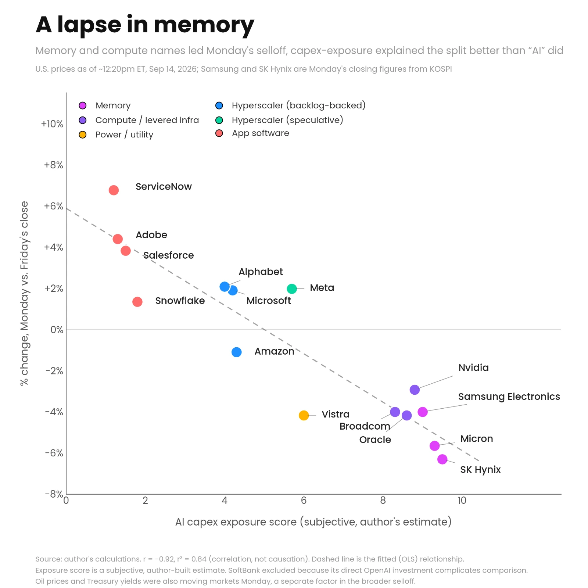

When the chips are down...
AI safety concerns took over the headlines this weekend, with several industry leaders calling for a slower pace of frontier model development. AI-linked stocks fell this morning, but not all of them, and not evenly. (Oil + Treasury yields were moving markets too.)
Scoring 15 AI-related stocks on how exposed they are to spending on chips, memory, and data centers, then plotting that against Monday’s move (charted below), shows an interesting pattern in this group:
➡️ Memory and compute names took the biggest hits
➡️ The app software names in the chart mostly rose
➡️ The moves track closely with the capex-exposure scores
That doesn’t mean investors expect the buildout to slow. But it suggests they might be weighing the pace of spending more than AI’s value as a whole.. a different question with different implications.
Meta stands out: shares up despite a relatively high exposure score. However, its business mix differs from the cloud providers’, though that alone doesn’t explain the move.
Still intraday for the U.S. names, so we’ll see if it holds by the close.
